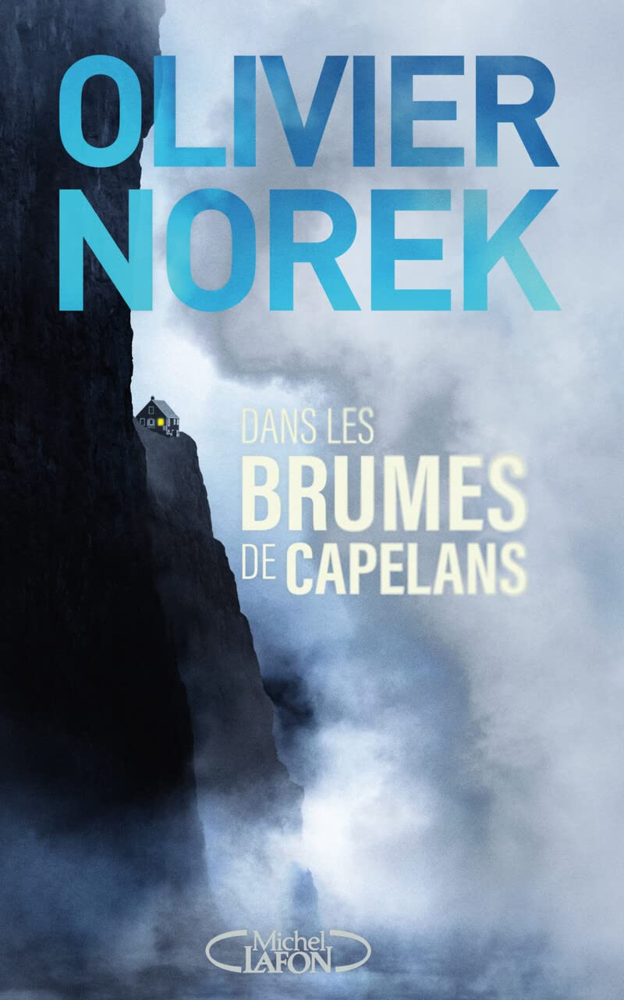
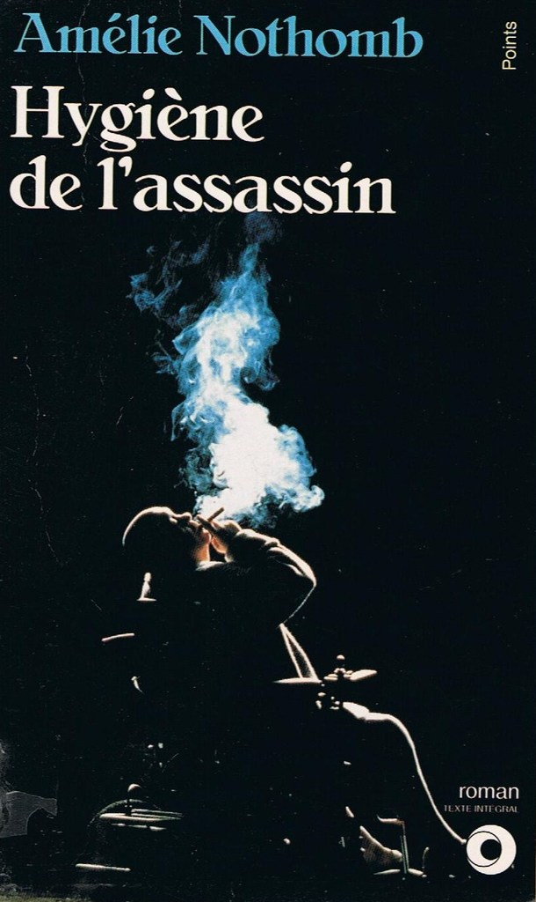
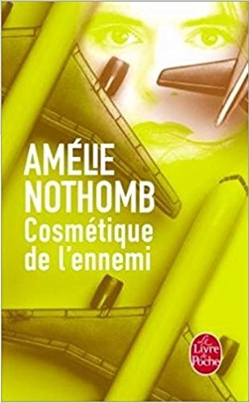

Macbeth
#roman-policier
Leur Domaine
#roman-policier
Oeuvres
#philosophie
Une Histoire populaire de la France
#histoire
Code 93
#roman-policier
Territoires
#roman-policier
Surtensions
#roman-policier

Dans les brumes de Capelans
#roman-policier
Le Sang d'Odin
#thriller

Hygiène de l'assassin
#roman
Métaphysique des tubes
#roman

Cosmétique de l'ennemi
#roman
Le Livre de Phénix
#science-fiction
Rosa candida
#roman
Madame Bâ
#roman
Dans la dèche à Paris et à Londres
#roman
1984
#roman-dystopique
Là où chantent les écrevisses
#roman
Trop semblable à l'éclair
#science-fiction
Sept Redditions
#science-fiction